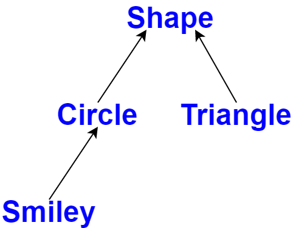

The central language feature of C++ is the class.
A class is a user-defined type provided to represent a concept in the code of a program.
A program built upon a well chosen set of classes is far easier to understand and get right than one that builds everything directly in terms of the built-in types.
Most programming techniques rely on the design and implementation of specific kinds of classes.
The needs and tastes of programmers vary immensely.
Consequently, the support for classes is extensive.
We will focus on the basic support for three important kinds of classes:
The basic idea of concrete classes is that they behave "just like built-in types."
For example, a complex number type and an infinite-precision integer are much like built-in int, except of course that they have their own semantics and sets of operations.
Similarly, a vector and a string are much like built-in arrays, except that they are better behaved.
The defining characteristic of a concrete type is that its representation is part of its definition.
In many important cases, such as a vector, that representation is only one or more pointers to more data stored elsewhere, but it is present in each object of a concrete class.
That allows implementations to be optimally efficient in time and space.
In particular, this allows to:
The representation can be private and accessible only through the member functions, but it is present.
Therefore, if the representation changes in any significant way, a user must recompile.
This is the price to pay for having concrete types behave exactly like built-in types.
For types that don't change often, and where local variables provide much-needed clarity and efficiency, this is acceptable and often ideal.
To increase flexibility, a concrete type can keep major parts of its representation on the heap (dynamic memory) and access them through the part stored in the class object itself.
That's the way vector and string are implemented; they can be considered resource handles with carefully crafted interfaces.
class complex {
double re, im; // representation: two doubles
public:
complex(double r, double i) :re{r}, im{i} {} // construct complex from two scalars
complex(double r) :re{r}, im{0} {} // construct complex from one scalar
complex() :re{0}, im{0} {} // default complex:{0,0}
double real() const { return re; }
void real(double d) { re=d; }
double imag() const { return im; }
void imag(double d) { im=d; }
complex& operator+=(complex z) { re+=z.re, im+=z.im; return *this; } // add and im
// and return the result
complex& operator-=(complex z) { re-=z.re, im-=z.im; return *this; }
complex& operator*=(complex); // defined out-of-class somewhere
complex& operator/=(complex); // defined out-of-class somewhere
};This is a slightly simplified version of the standard-library complex.
The class definition itself contains only the operations requiring access to the representation.
The representation is simple and conventional.
In addition to the logical demands, complex must be efficient or it will remain unused.
This implies that simple operations must be inlined:
+=, and imag() must be implemented without function calls in the generated machine code.Functions defined in a class are inlined by default.
A constructor that can be invoked without an argument is called a default constructor.
Thus, complex() is complex's default constructor.
By defining a default constructor we eliminate the possibility of uninitialized variables of that type.
The const specifiers on the functions returning the real and imaginary parts indicate that these functions do not modify the object for which they are called.
Many useful operations do not require direct access to the representation of complex, so they can be defined separately from the class definition:
complex operator+(complex a, complex b) { return a+=b; }
complex operator-(complex a, complex b) { return a-=b; }
complex operator-(complex a) { return {-a.real(), -a.imag()}; } // unary minus
complex operator*(complex a, complex b) { return a*=b; }
complex operator/(complex a, complex b) { return a/=b; }Here, we use the fact that an argument passed by value is copied, so that we can modify an argument without affecting the caller's copy, and use the result as the return value.
The definitions of == and != are straightforward:
bool operator==(complex a, complex b) // equal
{
return a.real() == b.real() && a.imag() == b.imag();
}
bool operator !=(complex a, complex b) // not equal
{
return !(a==b);
}Class complex can be used like this:
void f(complex z) {
complex a {2.3}; // construct {2.3,0.0} from 2.3
complex b {1/a};
complex c {a + z * complex{1,2.3}};
// ...
if (c != b)
c = - (b / a) + 2 * b;
}The compiler converts operators involving complex numbers into appropriate function calls.
For example, c != b means operator!=(c,b) and 1/a means operator/(complex{1},a).
Overloaded operators should be used cautiously and conventionally.
The syntax is fixed by the language, so you can't define a unary /.
Also, it is not possible to change the meaning of an operator for built-in types, so you can't redefine + to subtract ints.
A container is an object holding a collection of elements.
Therefore, we call Vector a container because it is of the type of objects that are containers.
As defined in the previous class (Introduction to C++), Vector is a reasonable container of doubles: it is simple to understand, establishes a useful invariant, provides range-checked access, and provides size() to allow us to iterate over its elements.
However, it does have a fatal flaw: it allocates elements using new but never deallocates them.
We need a mechanism to ensure that the memory allocated by the constructor is deallocated: a destructor.
class Vector {
private:
double* elem; // elem points to an array of sz doubles
int sz;
public:
Vector(int s) :elem{new double[s]}, sz{s} // constructor: acquire resources
{
for (int i=0; i!=s; ++i) elem[i]=0; // initialize elements
}
~Vector() { delete[] elem; } // destructor: release resources
double& operator[](int i);
int size() const;
};class Vector {
private:
double* elem; // elem points to an array of sz doubles
int sz;
public:
Vector(int s) :elem{new double[s]}, sz{s} // constructor: acquire resources
{
for (int i=0; i!=s; ++i) elem[i]=0; // initialize elements
}
~Vector() { delete[] elem; } // destructor: release resources
double& operator[](int i);
int size() const;
};The name of a destructor is the complement operator, ̃, followed by the name of the class: it is the complement of a constructor.
Vector's constructor allocates some memory on the free store (also called the heap or dynamic store) using the new operator.
The destructor cleans up by freeing that memory using the delete operator.
This is all done without intervention by users of Vector.
The users simply create and use Vectors much as they would variables of built-in types.
This Vector has been simplified by leaving out error handling.
void fct(int n)
{
Vector v(n);
// ... use v ...
{
Vector v2(2 * n);
// ... use v and v2 ...
} // v2 is destroyed here
// ... use v ..
} // v is destroyed hereVector obeys the same rules for naming, scope, allocation, lifetime, etc., as does a built-in type, such as int and char.
The constructor/destructor combination is the basis of many elegant techniques.
In particular, it is the basis for most C++ general resource management techniques.
Consider the following graphical illustration of a Vector:
The constructor allocates the elements and initializes the Vector members appropriately.
The destructor deallocates the elements.
This handle-to-data model is very commonly used to manage data that can vary in size during the lifetime of an object.
The technique of acquiring resources in a constructor and releasing them in a destructor, known as Resource Acquisition Is Initialization or RAII, allows us to eliminate "naked new operations", that is, to avoid allocations in general code and keep them buried inside the implementation of well-behaved abstractions.
Similarly, "naked delete operations" should be avoided.
Avoiding naked new and naked delete makes code less error-prone and far easier to keep free of resource leaks.
A container exists to hold elements, so obviously we need convenient ways of getting elements into a container.
We can handle that by creating a Vector with an appropriate number of elements and then assigning to them, but typically other ways are more elegant, like:
push_back(): add a new element at the end (at the back of) the sequence.These can be declared like this:
class Vector {
public:
Vector(std::initializer_list<double>); // initialize with a list
// ...
void push_back(double); // add element at end increasing the size by one
// ...
};The push_back is useful for input of arbitrary numbers of elements:
Vector read(istream& is) {
Vector v;
for (double d; is>>d;) // read floating-point values into d
v.push_back(d); // add d to v
return v;
}Vector read(istream& is) {
Vector v;
for (double d; is>>d;) // read floating-point values into d
v.push_back(d); // add d to v
return v;
}The input loop is terminated by an end-of-file or a formatting error.
Until that happens, each number read is added to the Vector so that at the end, v's size is the number of elements read.
A for-statement was used, rather than the more conventional while-statement to keep the scope of d limited to the loop.
The std::initializer_list used to define the initializer-list constructor is a standard-library type known to the compiler: when we use a {}-list, such as {1,2,3,4,5}, the compiler will create an object of type initializer_list to give to the program:
Vector v1 = {1,2,3,4,5}; // v1 has 5 elements
Vector v2 = {1.23, 3.45, 6.7, 8}; // v2 has 4 elements
Vector's initializer-list constructor could be like this:
Vector::Vector(std::initializer_list<double> lst) // initialize with a list
:elem{new double[lst.size()]}, sz{lst.size()}
{
copy(lst.begin(), lst.end(), elem); // copy from lst into elem
}Types such as complex and Vector are called concrete types because their representation is part of their definition.
In that, they resemble built-in types.
In contrast, an abstract type is a type that completely insulates a user from implementation details.
To do that, we decouple the interface from the representation and give up genuine local variables.
Since we don't know anything about the representation of an abstract type (not even its size), we must allocate objects on the heap and access them through references or pointers.
First, let us define the interface of a class Container which we will design as a more abstract version of our Vector:
class Container {
public:
virtual double& operator[](int) = 0; // pure virtual function
virtual int size() const = 0; // const member function
virtual ~Container() {} // destructor
};This class is a pure interface to specific containers defined later.
The word virtual means "may be redefined later in a class derived from this one".
A function declared virtual is called a virtual function.
class Container {
public:
virtual double& operator[](int) = 0; // pure virtual function
virtual int size() const = 0; // const member function
virtual ~Container() {} // destructor
};A class derived from Container provides an implementation for the Container interface.
The =0 syntax states that the function is pure virtual; that is, some class derived from Container must define the function.
Thus, it is not possible to define an object that is just a Container; a Container can only serve as the interface to a class that implements its operator[]() and size() functions.
A class with a pure virtual function is called an abstract class.
class Container {
public:
virtual double& operator[](int) = 0; // pure virtual function
virtual int size() const = 0; // const member function
virtual ~Container() {} // destructor
};This Container can be used like this:
void use(Container& c)
{
const int sz = c.size();
for (int i=0; i!=sz; ++i)
cout << c[i] << '\n';
}
Note how use() uses the Container interface in complete ignorance of implementation details.
It uses size() and [] without any idea of exactly which type provides their implementation.
A class that provides the interface to a variety of other classes is often called a polymorphic type.
class Container {
public:
virtual double& operator[](int) = 0; // pure virtual function
virtual int size() const = 0; // const member function
virtual ~Container() {} // destructor
};As is common for abstract classes, Container does not have a constructor.
After all, it does not have any data to initialize.
On the other hand, Container does have a destructor and that destructor is virtual.
Again, that is common for abstract classes because they tend to be manipulated through references or pointers, and someone destroying a Container through a pointer has no idea what resources are owned by its implementation.
class Container {
public:
virtual double& operator[](int) = 0; // pure virtual function
virtual int size() const = 0; // const member function
virtual ~Container() {} // destructor
};A container that implements the functions required by the interface defined by the abstract class Container could use the concrete class Vector:
class Vector_container : public Container { // Vector_container implements Container
Vector v;
public:
Vector_container(int s) : v(s) { } // Vector of s elements
~Vector_container() {}
double& operator[](int i) { return v[i]; }
int size() const { return v.size(); }
};class Vector_container : public Container { // Vector_container implements Container
Vector v;
public:
Vector_container(int s) : v(s) { } // Vector of s elements
~Vector_container() {}
double& operator[](int i) { return v[i]; }
int size() const { return v.size(); }
};The :public can be read as "is derived from" or "is a subtype of".
Class Vector_container is said to be derived from class Container, and class Container is said to be a base of class Vector_container.
An alternative terminology calls Vector_container and Container subclass and superclass, respectively.
The derived class is said to inherit members from its base class, so the use of base and derived classes is commonly referred to as inheritance.
class Vector_container : public Container { // Vector_container implements Container
Vector v;
public:
Vector_container(int s) : v(s) { } // Vector of s elements
~Vector_container() {}
double& operator[](int i) { return v[i]; }
int size() const { return v.size(); }
};The members operator[]() and size() are said to override the corresponding members in the base class Container.
The destructor (~Vector_container()) overrides the base class destructor (~Container()).
Note that the member destructor (~Vector()) is implicitly invoked by its class's destructor (~Vector_container()).
class Vector_container : public Container { // Vector_container implements Container
Vector v;
public:
Vector_container(int s) : v(s) { } // Vector of s elements
~Vector_container() {}
double& operator[](int i) { return v[i]; }
int size() const { return v.size(); }
};For a function like use(Container&) to use a Container in complete ignorance of implementation details, some other function will have to make an object on which it can operate:
void g() {
Vector_container vc {10, 9, 8, 7, 6, 5, 4, 3, 2, 1, 0};
use(vc);
}Since use() doesn't know about Vector_containers but only knows the Container interface, it will work just as well for a different implementation of a Container.
class List_container : public Container { // List_container implements Container
std::list<double> ld; // (standard-library) list of doubles
public:
List_container() { } // empty List
List_container(initializer_list<double> il) : ld{il} { }
~List_container() {}
double& operator[](int i);
int size() const { return ld.size(); }
};
double& List_container::operator[](int i) {
for (auto& x : ld) {
if (i==0) return x;
−−i; }
throw out_of_range("List container");
}Here, the representation is a standard-library list<double>.
Usually, one should not implement a container with a subscript operation using a list, because performance of list subscripting is very poor, compared to vector subscripting.
However, here is an implementation that is radically different from the usual one.
class List_container : public Container { // List_container implements Container
std::list<double> ld; // (standard-library) list of doubles
public:
List_container() { } // empty List
List_container(initializer_list<double> il) : ld{il} { }
~List_container() {}
double& operator[](int i);
int size() const { return ld.size(); }
};
double& List_container::operator[](int i) {
for (auto& x : ld) {
if (i==0) return x;
−−i; }
throw out_of_range("List container");
}A funcion can create a List_container and have use() use it:
void h() {
List_container lc = { 1, 2, 3, 4, 5, 6, 7, 8, 9 };
use(lc);
}void g() {
Vector_container vc {10, 9, 8, 7, 6, 5, 4, 3, 2, 1, 0};
use(vc);
}
void h() {
List_container lc = { 1, 2, 3, 4, 5, 6, 7, 8, 9 };
use(lc);
}The point is that use(Container& c) has no idea if its argument is a Vector_container, a List_container, or some other kind of container: it doesn't need to know.
It can use any kind of Container.
It knows only the interface defined by Container.
Consequently, use(Container& c) needn't be recompiled if the implementation of List_container changes or a brand-new class derived from Container is used.
The down side of this flexibility is that objects must be manipulated through pointers or references.
Lets consider again the user of Container:
void use(Container& c) {
const int sz = c.size();
for (int i=0; i!=sz; ++i)
cout << c[i] << '\n';
}
void g() {
Vector_container vc {10, 9, 8, 7, 6, 5, 4, 3, 2, 1, 0};
use(vc);
}
void h() {
List_container lc = { 1, 2, 3, 4, 5, 6, 7, 8, 9 };
use(lc);
}How is the call c[i] in use() resolved to the right operator[]()?
When h() calls use(), List_container's operator[]() must be called.
When g() calls use(), Vector_container's operator[]() must be called.
To achieve this resolution, a Container object must contain information to allow it to select the right function to call at run time.
The usual implementation technique is for the compiler to convert the name of a virtual function into an index into a table of pointers to functions.
That table is usually called the virtual function table or simply the vtbl.
Each class with virtual functions has its own vtbl identifying its virtual functions.
The functions in the vtbl allow the object to be used correctly even when the size of the object and the layout of its data are unknown to the caller.
The implementation of the caller needs only to know the location of the pointer to the vtbl in a Container and the index used for each virtual function.
This virtual call mechanism can be made almost as efficient as the "normal function call" mechanism (within 25%).
Its space overhead is one pointer in each object of a class with virtual functions plus one vtbl for each such class.
The Container example is a very simple example of a class hierarchy.
A class hierarchy is a set of classes ordered in a lattice created by derivation (e.g., : public).
Class hierarchies are used to represent concepts that have hierarchical relationships, such as:
Huge hierarchies, with hundreds of classes, that are both deep and wide are common.
Lets consider the following example:
The arrows represent inheritance relationships.
For example, class Circle is derived from class Shape.
To represent that simple diagram in code, we must first specify a class that defines the general properties of all shapes:
class Shape {
public:
virtual Point center() const = 0; // pure virtual
virtual void move(Point to) = 0;
virtual void draw() const = 0; // draw on current "Canvas"
virtual void rotate(int angle) = 0; // destructor
virtual ~Shape() {}
// ...
};class Shape {
public:
virtual Point center() const = 0; // pure virtual
virtual void move(Point to) = 0;
virtual void draw() const = 0; // draw on current "Canvas"
virtual void rotate(int angle) = 0; // destructor
virtual ~Shape() {}
// ...
};Naturally, this interface is an abstract class: as far as representation is concerned, nothing (except the location of the pointer to the vtbl) is common for every Shape.
Given this definition, we can write general functions manipulating vectors of pointers to shapes:
void rotate_all(vector<Shape∗>& v, int angle) // rotate v's elements by angle degrees
{
for (auto p : v)
p−>rotate(angle);
}To define a particular shape, we must say that it is a Shape and specify its particular properties (including its virtual functions):
class Circle : public Shape {
public:
Circle(Point p, int rr); // constructor
Point center() const { return x; }
void move(Point to) { x=to; }
void draw() const;
void rotate(int) {}
private:
Point x; // center
int r; // radius
};class Smiley : public Circle { // use the circle as the base for a face public:
Smiley(Point p, int r) : Circle{p,r}, mouth{nullptr} { }
~Smiley() {
delete mouth;
for (auto p : eyes) delete p;
}
void move(Point to);
void draw() const;
void rotate(int);
void add_eye(Shape∗ s) { eyes.push_back(s); }
void set_mouth(Shape∗ s);
virtual void wink(int i); // wink eye number i
// ...
private:
vector<Shape∗> eyes; // usually two eyes
Shape∗ mouth;
};void add_eye(Shape∗ s) { eyes.push_back(s); }The push_back() member function adds its argument to the vector (here, eyes), increasing that vector's size by one.
We can now define Smiley::draw() using calls to Smiley's base and member draw()s:
void Smiley::draw() {
Circle::draw();
for (auto p : eyes)
p−>draw();
mouth−>draw();
}~Smiley() {
delete mouth;
for (auto p : eyes) delete p;
}Note the way that Smiley keeps its eyes in a standard-library vector and deletes them in its destructor.
Shape's destructor is virtual and Smiley's destructor overrides it.
A virtual destructor is essential for an abstract class because an object of a derived class is usually manipulated through the interface provided by its abstract base class.
In particular, it may be deleted through a pointer to a base class.
Then, the virtual function call mechanism ensures that the proper destructor is called.
That destructor then implicitly invokes the destructors of its bases and members.
We can add data members, operations, or both as we define a new class by derivation.
This gives great flexibility with corresponding opportunities for confusion and poor design.
A function in a derived class overrides a virtual function in a base class if that function has exactly the same name and type.
In large hierachies, it is not always obvious if overriding was intended.
A function with a slightly different name or a slightly different type may be intended to override or it may be intended to be a separate function.
To avoid confusion in such cases, a programmer can explicitly state that a function is meant to override.
class Smiley : public Circle { // use the circle as the base for a face
public:
Smiley(Point p, int r) : Circle{p,r}, mouth{nullptr} { }
~Smiley() {
delete mouth;
for (auto p : eyes)
delete p;
}
void move(Point to) override;
void draw() const override;
void rotate(int) override;
void add_eye(Shape∗ s) { eyes.push_back(s); }
void set_mouth(Shape∗ s);
virtual void wink(int i); // wink eye number i
// ...
private:
vector<Shape∗> eyes; // usually two eyes Shape∗ mouth;
};Now, had I mistyped move as mve, I would have gotten an error because no base of Smiley has a virtual function called mve.
Similarly, if I added override to the declaration of wink(), I would have gotten an error message.
A class hierarchy offers two kinds of benefits:
Container and Shape classes are examples.Smiley's uses of Circle's constructor and of Circle::draw() are examples.Concrete classes - especially classes with small representations - are much like built-in types:
Classes in class hierarchies are different: we tend to allocate them on the heap using new, and we access them through pointers or references.
Consider a function that reads data describing shapes from an input stream and constructs the appropriate Shape objects:
enum class Kind { circle, triangle, smiley };
Shape* read_shape(istream& is) // read shape descriptions from input stream is
{
// ... read shape header from is and find its Kind k ...
switch (k) {
case Kind::circle:
// read circle data {Point,int} into p and r
return new Circle{p,r};
case Kind::triangle:
// read triangle data {Point,Point,Point} into p1, p2, and p3
return new Triangle{p1,p2,p3};
case Kind::smiley:
// read smiley data {Point,int,Shape,Shape,Shape} into p, r, e1 ,e2, and m
Smiley∗ ps = new Smiley{p,r};
ps−>add_eye(e1);
ps−>add_eye(e2);
ps−>set_mouth(m);
return ps;
}
}A program may use that shape reader like this:
void user() {
std::vector<Shape∗> v;
while (cin)
v.push_back(read_shape(cin));
draw_all(v); // call draw() for each element
rotate_all(v,45); // call rotate(45) for each element
for (auto p : v) delete p; // remember to delete elements
}Obviously, the example is simplified – especially with respect to error handling – but it vividly illustrates that user() has absolutely no idea of which kinds of shapes it manipulates.
The user() code can be compiled once and later used for new Shapes added to the program.
void user() {
std::vector<Shape∗> v;
while (cin)
v.push_back(read_shape(cin));
draw_all(v); // call draw() for each element
rotate_all(v,45); // call rotate(45) for each element
for (auto p : v) delete p; // remember to delete elements
}Note that there are no pointers to the shapes outside user(), so user() is responsible for deallocating them.
This is done with the delete operator and relies critically on Shape's virtual destructor.
Because that destructor is virtual, delete invokes the destructor for the most derived class.
This is crucial because a derived class may have acquired all kinds of resources (such as file handles, locks, and output streams) that need to be released.
In this case, a Smiley deletes its eyes and mouth objects.
The read_shape() function returns Shape* so that we can treat all Shapes alike.
However, what can we do if we want to use a member function that is only provided by a particular derived class, such as Smiley's wink()?
We can ask "is this Shape a kind of Smiley?" using the dynamic_cast operator.
Shape∗ ps {read_shape(cin)};
if (Smiley∗ p = dynamic_cast<Smiley∗>(ps)) {
// ... is the Smiley pointer to by p ...
}
else {
// ... not a Smiley, try something else ...
}If the object pointed to by the argument of dynamic_cast (ps) is not of the expected type (Smiley) or a class derived from the expected type, dynamic_cast returns nullptr.
We use dynamic_cast to a pointer type when a pointer to an object of a different derived class is a valid argument.
We then test whether the result is nullptr.
This test can often conveniently be placed in the initialization of a variable in a condition.
When a different type is unacceptable, we can simply dynamic_cast to a reference type. If the object is not of the expected type, bad_cast is thrown:
Shape∗ ps {read_shape(cin)};
Smiley& r {dynamic_cast<Smiley&>(∗ps)}; // somewhere, catch std::bad_castCode is cleaner when dynamic_cast is used with restraint.
If we can avoid using type information, we can write simpler and more efficient code, but occasionally type information is lost and must be recovered.
This typically happens when we pass an object to some system that accepts an interface specified by a base class.
When that system later passes the object back to use, we might have to recover the original type.
Operations similar to dynamic_cast are known as "is kind of" and "is instance of" operations.
Notice that we left open two obvious opportunities for mistakes:
delete the pointer returned by read_shape().Shape pointers might not delete the objects pointed to.In that sense, functions returning a pointer to an object allocated on the heap are dangerous.
One solution to both problems is to return a standard-library unique_ptr rather than a "naked pointer" and store unique_ptrs in the container.
unique_ptr<Shape> read_shape(istream& is) // read shape descriptions from input stream is
{
// read shape header from is and find its Kind k
switch (k) {
case Kind::circle:
// read circle data {Point,int} into p and r
return unique_ptr<Shape>{new Circle{p,r}};
// ...
}
}
void user() {
vector<unique_ptr<Shape>> v;
while (cin)
v.push_back(read_shape(cin));
draw_all(v); // call draw() for each element
rotate_all(v,45); // call rotate(45) for each element
} // all Shapes implicitly destroyedNow the object is owned by the unique_ptr which will delete the object when it is no longer needed, that is, when its unique_ptr goes out of scope.
For the unique_ptr version of user() to work, we need versions of draw_all() and rotate_all() that accept vector<unique_ptr<Shape>>s.
By default, objects can be copied.
This is true for objects of user-defined types as well as for built-in types.
The default meaning of copy is memberwise copy: copy each member.
For example, consider our previous complex example:
void test(complex z1) {
complex z2{z1}; //copy initialization
complex z3;
z3 = z2; // copy assignment
// ...
}void test(complex z1) {
complex z2{z1}; //copy initialization
complex z3;
z3 = z2; // copy assignment
// ...
}Now z1, z2, and z3 have the same value because both the assignment and the initialization copied both members.
When we design a class, we must always consider if and how an object might be copied.
For simple concrete types, memberwise copy is often exactly the right semantics for copy.
For some sophisticated concrete types, such as Vector, memberwise copy is not the right semantics for copy, and for abstract types it almost never is.
When a class is a resource handle, that is, it is responsible for an object accessed through a pointer, the default memberwise copy is typically a disaster.
Memberwise copy would violate the resource handle's invariant.
For example, the default copy would leave a copy of a Vector referring to the same elements as the original:
void bad_copy(Vector v1)
{
Vector v2 = v1; // copy v1’s representation into v2
v1[0] = 2; // v2[0] is now also 2!
v2[1] = 3; // v1[1] is now also 3!
}void bad_copy(Vector v1)
{
Vector v2 = v1; // copy v1’s representation into v2
v1[0] = 2; // v2[0] is now also 2!
v2[1] = 3; // v1[1] is now also 3!
}Assuming that v1 has four elements, the result can be represented graphically like this:
Fortunately, the fact that Vector has a destructor is a strong hint that the default (memberwise) copy semantics is wrong and the compiler should at least warn against this example.
We need to define better copy semantics.
Copying of an object of a class is defined by two members: a copy constructor and a copy assignment.
class Vector {
private:
double* elem; // elem points to an array of sz doubles
int sz;
public:
Vector(int s); // constructor: establish invariant, acquire resources
~Vector() { delete[] elem; } // destructor: release resources
Vector(const Vector& a); // copy constructor
Vector& operator=(const Vector& a); // copy assignement
double& operator[](int i);
const double& operator[](int i) const;
int size() const;
};A suitable definition of a copy constructor for Vector allocates the space for the required number of elements and then copies the elements into it, so that after a copy each Vector has its own copy of the elements:
Vector::Vector(const Vector& a) // copy constructor
:elem{new double[a.sz]}, // allocate space for elements
sz{a.sz}
{
for (int i=0; i!=sz; ++i) // copy elements
elem[i] = a.elem[i];
}Vector::Vector(const Vector& a) // copy constructor
:elem{new double[a.sz]}, // allocate space for elements
sz{a.sz}
{
for (int i=0; i!=sz; ++i) // copy elements
elem[i] = a.elem[i];
}The result of the v2=v1 example can now be presented as:
We also need a copy assignment in addition to the copy constructor:
Vector& Vector::operator=(const Vector& a) // copy assignment
{
double* p = new double[a.sz];
for (int i=0; i!=a.sz; ++i)
p[i] = a.elem[i];
delete[] elem; // delete old elements
elem = p;
sz = a.sz;
return *this;
}The name this is predefined in a member function and points to the object for which the member function is called.
A copy constructor and a copy assignment for a class X are typically declared to take an argument of type const X&.
We can control copying by defining a copy constructor and a copy assignment, but copying can be costly for large containers.
Consider:
Vector operator+(const Vector& a, const Vector& b) {
if (a.size()!=b.size())
throw Vector_size_mismatch{};
Vector res(a.size());
for (int i=0; i!=a.size(); ++i)
res[i]=a[i]+b[i];
return res;
}Vector operator+(const Vector& a, const Vector& b) {
if (a.size()!=b.size())
throw Vector_size_mismatch{};
Vector res(a.size());
for (int i=0; i!=a.size(); ++i)
res[i]=a[i]+b[i];
return res;
}Returning from a + involves copying the result out of the local variable res and into some place where the caller can access it.
We might use this + like this:
void f(const Vector& x, const Vector& y, const Vector& z) {
Vector r;
// ...
r = x+y+z;
// ...
}void f(const Vector& x, const Vector& y, const Vector& z) {
Vector r;
// ...
r = x+y+z;
// ...
}That would be copying a Vector at least twice (one for each use of the + operator).
If a Vector is large, say, 10,000 doubles, that could be embarrassing.
The most embarrassing part is that res in operator+() is never used again after the copy.
We didn’t really want a copy; we just wanted to get the result out of a function: we wanted to move a Vector rather than to copy it.
class Vector {
// ...
Vector(const Vector& a); // copy constructor
Vector& operator=(const Vector& a); // copy assignment
Vector(Vector&& a); // move constructor
Vector& operator=(Vector&& a); // move assignment
};Given that definition, the compiler will choose the move constructor to implement the transfer of the return value out of the function.
This means that r=x+y+z will involve no copying of Vectors.
Instead, Vectors are just moved.
Vector::Vector(Vector&& a)
:elem{a.elem}, // "grab the elements" from a
sz{a.sz}
{
a.elem = nullptr; // now a has no elements
a.sz = 0;
}The && means "rvalue reference" and is a reference to which we can bind an rvalue.
The word "rvalue" is intended to complement "lvalue", which roughly means "something that can appear on the left-hand side of an assignment".
So an rvalue is - to a first approximation - a value that you can't assign to, such as an integer returned by a function call, and an rvalue reference is a reference to something that nobody else can assign to.
The res local variable in operator+() for Vectors is an example.
A move constructor does not take a const argument: after all, a move constructor is supposed to remove the value from its argument.
A move assignment is defined similarly.
A move operation is applied when an rvalue reference is used as an initializer or as the right-hand side of an assignment.
After a move, a moved-from object should be in a state that allows a destructor to be run.
Typically, we should also allow assignment to a moved-from object.
Where the programmer knows that a value will not be used again, but the compiler can’t be expected to be smart enough to figure that out, the programmer can be specific (see next slide)
Vector f() {
Vector x(1000);
Vector y(1000);
Vector z(1000);
// ...
z = x; // we get a copy
y = std::move(x); // we get a move
// ...
return z; // we get a move
}The standard-library function move() returns an rvalue reference to its argument.
Just before the return we have:
When z is destroyed, it too has been moved from (by the return) so that, like x, it is empty (it holds no elements).
Using the default copy or move for a class in a hierarchy is typically a disaster: given only a pointer to a base, we simply don’t know what members the derived class has, so we can’t know how to copy them.
So, the best thing to do is usually to delete the default copy and move operations, that is, to eliminate the default definitions of those two operations:
class Shape {
public:
Shape(const Shape&) =delete; // no copy operations
Shape& operator=(const Shape&) =delete;
Shape(Shape&&) =delete; // no move operations
Shape& operator=(Shape&&) =delete;
~Shape();
// ...
};Now an attempt to copy a Shape will be caught by the compiler.
If you need to copy an object in a class hierarchy, write some kind of clone function.
In this particular case, if you forgot to delete a copy or move operation, no harm is done.
A move operation is not implicitly generated for a class where the user has explicitly declared a destructor.
Furthermore, the generation of copy operations is deprecated in this case.
This can be a good reason to explicitly define a destructor even where the compiler would have implicitly provided one.
A base class in a class hierarchy is just one example of an object we wouldn’t want to copy.
A resource handle generally cannot be copied just by copying its members.
The =delete mechanism is general, that is, it can be used to suppress any operation.